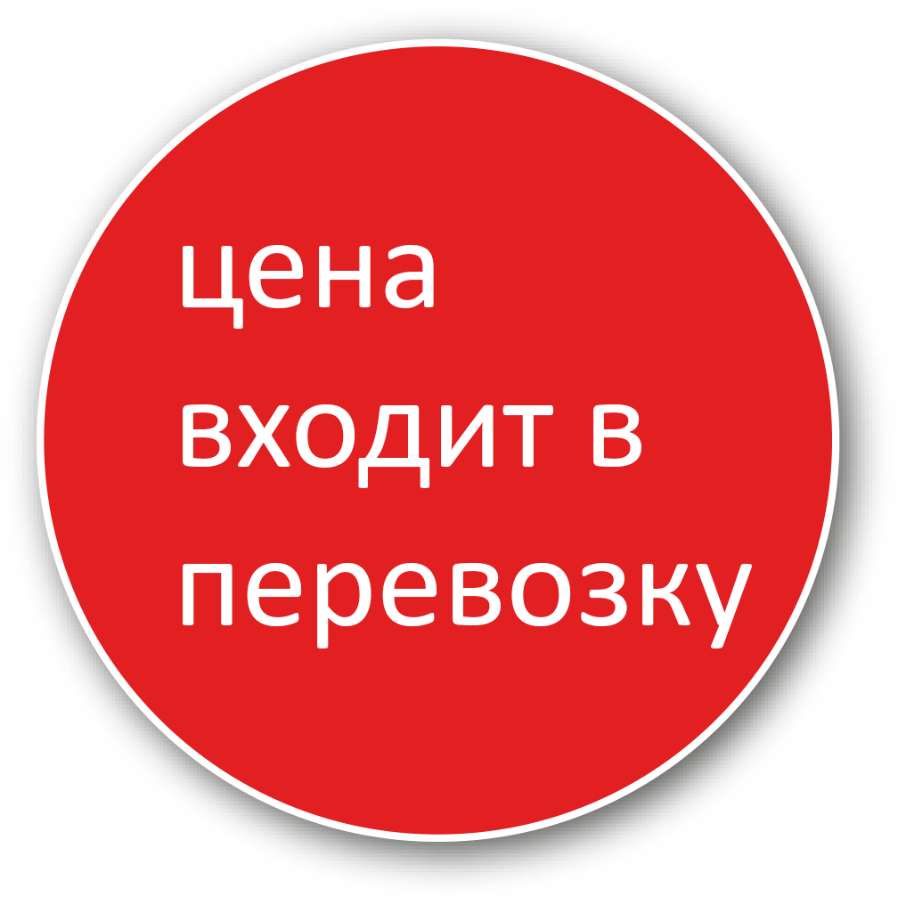

заказать звонок
технологический процесс отделения горной массы (горных пород или полезных ископаемых) от массива или навала, осуществляемый путём внедрения в него исполнительного (рабочего) органа машины, который при этом наполняется экскавируемой породой.
Производим экскавацию горной массы гидравлическими экскаваторами.
